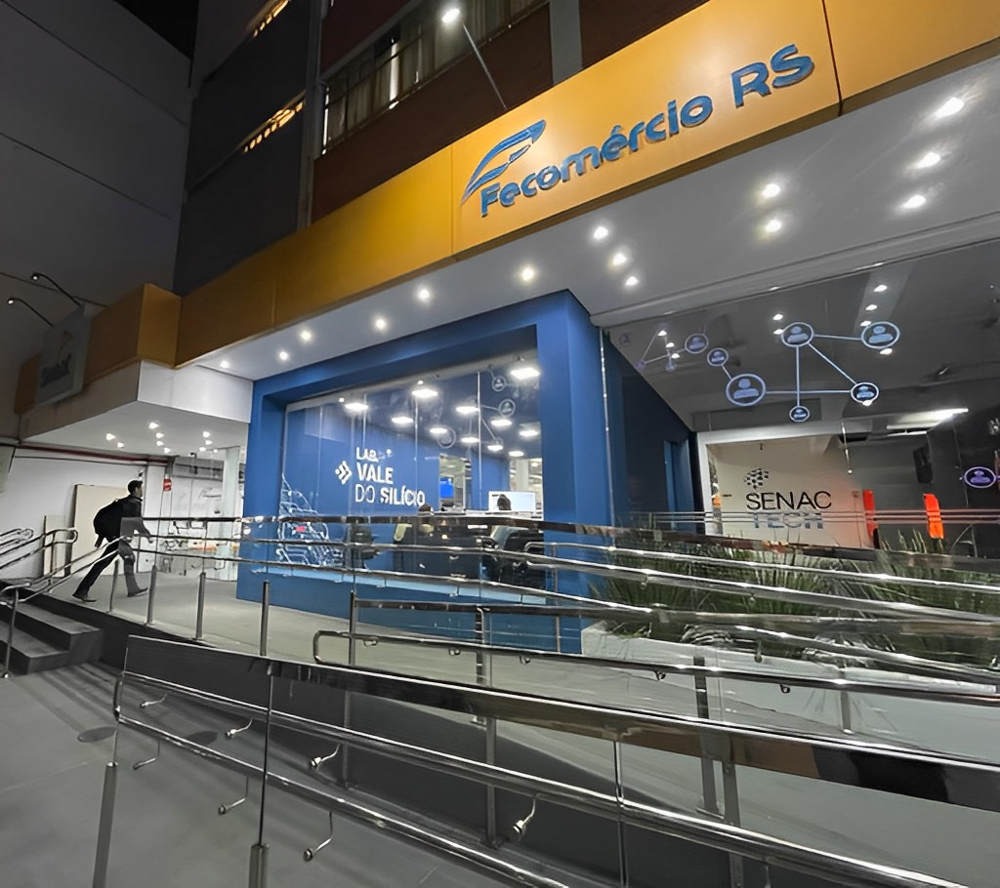
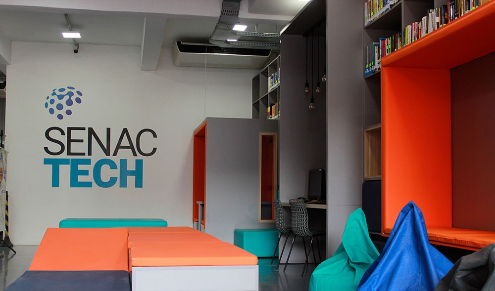

Senac Tech
Voltar


Fundado em 19 de outubro de 1989, o Senac Tech é um centro de tecnologia voltado para o conhecimento. Com um ambiente e um portfólio de cursos moderno, atende 3.700 mil alunos por ano por meio de cursos EAD e presenciais em diversos níveis, além de ações extensivas. O principal foco da escola é a educação profissional nas áreas da Informática e Gestão.
Ganhou diversos prêmios, entre eles o Troféu Bronze no Prêmio Qualidade RS - PQRS em 2008, 2009 e 2012, o Troféu Prata em 2015 e 2017, o Prêmio SUCESU, que destacou a fundação do Senac Informática como um dos seis acontecimentos mais importantes da década, e o reconhecimento pelo Comitê de Comércio e Serviços pela contribuição ao Sistema da Qualidade em 2008 e 2009.
Em 2016 comemorou, juntamente com todas as unidades do Estado, a conquista do Prêmio Nacional da Qualidade (PNQ). No ano seguinte, celebrou o Prêmio Ibero-Americano da Qualidade. O Senac-RS foi a primeira instituição de ensino do Brasil a receber as distinções, reconhecimentos máximo à excelência. Em março 2018, foi agraciada com o Melhores em Gestão e eleita Destaque na distinção promovida pela Fundação Nacional da Qualidade (FNQ).
A escola conta com mais de 50 docentes com certificações Microsoft, LPI e Adobe Instructor e Núcleo de Desenvolvimento e Inovação (para gerir as questões relacionadas à pesquisa e desenvolvimento de produtos). Também é Centro de Treinamento autorizado da AUTODESK.